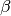
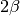

Fourier Transforms¶
Transforming the non-interacting Green’s Function for the Bethe lattice. Using the analytical expression for the tails. It is important to note that to get good enough resolution in the time domain at least  Matsubara frequencies are needed.
If the Greens Functions is very asymmetric one better use  Matsubara frequencies as for the Fourier transform improves with a large interval of zeros.
# Author: Óscar Nájera
from __future__ import division, absolute_import, print_function
import dmft.common as gf
import matplotlib.pyplot as plt
plt.matplotlib.rcParams.update({'figure.figsize': (8, 8), 'axes.labelsize': 22,
'axes.titlesize': 22, 'figure.autolayout': True})
tau, w_n = gf.tau_wn_setup(dict(BETA=64, N_MATSUBARA=128))
fig, ax = plt.subplots(2, 1)
c_v = ['b', 'g', 'r', 'y']
for mu, c in zip([0, 0.3, 0.6, 1.], c_v):
giw = gf.greenF(w_n, mu=mu)
gtau = gf.gw_invfouriertrans(giw, tau, w_n, [1., -mu, 0.25])
ax[0].plot(w_n, giw.real, c+'o:', label=r'$\Re G$, $\mu={}$'.format(mu))
ax[0].plot(w_n, giw.imag, c+'s:')
ax[1].plot(tau, gtau, c, lw=2, label=r'$\mu={}$'.format(mu))
ax[0].set_xlim([0, 6])
ax[0].set_xlabel(r'$i\omega_n$')
ax[0].set_ylabel(r'$G(i\omega_n)$')
ax[1].set_xlabel(r'$\tau$')
ax[1].set_ylabel(r'$G(\tau)$')
ax[1].set_xlim([0, 64])
ax[0].legend(loc=0)
ax[1].legend(loc=0)
Review on resolution¶
Here comes to evidence the need of having a long contribution of zeros from the tail subtracted Matsubara Green function. There is a reduced noise in the function transformed with its third moment coming from the self-consistency(Black line)
fig, ax = plt.subplots(2, 1, sharex=True, sharey=True)
ax[1].set_xlabel(r'$\tau$')
ax[1].set_ylabel(r'$G(\tau)$')
c_v = ['b', 'g', 'r', 'y']
for mu, c in zip([0, 0.3, 0.6, 1.], c_v):
tau, w_n = gf.tau_wn_setup(dict(BETA=64, N_MATSUBARA=64))
giw = gf.greenF(w_n, mu=mu)
gtau = gf.gw_invfouriertrans(giw, tau, w_n, [1., -mu, 0.])
ax[0].semilogy(tau, -gtau, c, lw=2, label=r'$\mu={}$'.format(mu))
gtau = gf.gw_invfouriertrans(giw, tau, w_n, [1., -mu, 0.25])
ax[0].semilogy(tau, -gtau, 'k', lw=1)
tau, w_n = gf.tau_wn_setup(dict(BETA=64, N_MATSUBARA=128))
giw = gf.greenF(w_n, mu=mu)
gtau = gf.gw_invfouriertrans(giw, tau, w_n, [1., -mu, 0.])
ax[1].semilogy(tau, -gtau, c, lw=2, label=r'$\mu={}$'.format(mu))
gtau = gf.gw_invfouriertrans(giw, tau, w_n, [1., -mu, 0.25])
ax[1].semilogy(tau, -gtau, 'k', lw=1)
ax[0].set_ylabel(r'$\ln (-G(\tau))$')
ax[0].set_title(r'$\beta$ frequencies')
ax[1].set_ylabel(r'$\ln (-G(\tau))$')
ax[1].set_title(r'$2\beta$ frequencies')
ax[1].set_xlabel(r'$\tau$')
ax[1].set_xlim([0, 64])
ax[0].legend(loc=0)
ax[1].legend(loc=0)
Including the self-energy of the atomic limit so to have a third moment¶
Here the there are the 3 improvements. Large tail subtracted Matsubara Green function, tail from the Self-Energy and tail of the self-consistency
fig, ax = plt.subplots(2, 1)
sigma = 2.5**2/4/(1j*w_n)
giiw = gf.greenF(w_n, mu=0, sigma=sigma)
gitau = gf.gw_invfouriertrans(giiw, tau, w_n, [1., 0, 2.5**2/4+0.25])
ax[0].plot(w_n, giiw.imag)
ax[1].plot(tau, gitau)
ax[0].set_xlim([0, 6])
ax[0].set_title('Green function in the atomic limit')
ax[0].set_xlabel(r'$i\omega_n$')
ax[0].set_ylabel(r'$\Im m G(i\omega_n)$')
ax[1].set_xlabel(r'$\tau$')
ax[1].set_ylabel(r'$G(\tau)$')
ax[1].set_xlim([0, 64])
fig, ax = plt.subplots(2, 1, sharex=True, sharey=True)
tau, w_n = gf.tau_wn_setup(dict(BETA=64, N_MATSUBARA=64))
sigma = 2.5**2/4/(1j*w_n)
giiw = gf.greenF(w_n, mu=0, sigma=sigma)
gitau = gf.gw_invfouriertrans(giiw, tau, w_n, [1., 0, 2.5**2/4+0.25])
ax[0].semilogy(tau, -gitau, 'k')
gitau = gf.gw_invfouriertrans(giiw, tau, w_n, [1., 0, 2.5**2/4])
ax[0].semilogy(tau, -gitau)
tau, w_n = gf.tau_wn_setup(dict(BETA=64, N_MATSUBARA=128))
sigma = 2.5**2/4/(1j*w_n)
giiw = gf.greenF(w_n, mu=0, sigma=sigma)
gitau = gf.gw_invfouriertrans(giiw, tau, w_n, [1., 0, 2.5**2/4+0.25])
ax[1].semilogy(tau, -gitau, 'k', lw=2)
gitau = gf.gw_invfouriertrans(giiw, tau, w_n, [1., 0, 2.5**2/4])
ax[1].semilogy(tau, -gitau)
gitau = gf.gw_invfouriertrans(giiw, tau, w_n, [1., 0, 2.5**2/4+0.25])
ax[1].semilogy(tau, gf.np.abs(gitau), 'r')
ax[0].set_title('Green function in the atomic limit')
ax[0].set_ylabel(r'$\ln (-G(\tau))$')
ax[0].set_title(r'$\beta$ frequencies')
ax[1].set_ylabel(r'$\ln (-G(\tau))$')
ax[1].set_title(r'$2\beta$ frequencies')
ax[1].set_xlabel(r'$\tau$')
ax[1].set_xlim([0, 64])
Total running time of the script: ( 0 minutes 1.064 seconds)